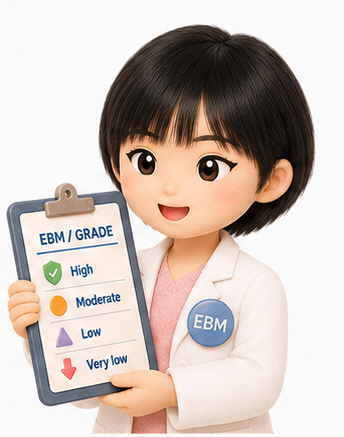

第1段階：SR前
問いと物差しを決める
CQの優先順位、PICO、アウトカムの重要度、評価時点、MID・意思決定の閾値、重要なサブグループを合意します。
成果物：CQ一覧、アウトカムシート、閾値、承認済みプロトコル
詳しい補助教材
このページは、時期を確認する7段階一覧とは別の詳しい解説です。 自分の段階は分かったものの、1〜9点、重要な差、判断表（EtD表）、推奨の方向・強さなどの判断方法で迷った時に、必要な項目だけを選んで読んでください。
まず全体を一枚で
最初の会議では「何を調べ、何を大切な結果として扱うか」を決めます。レビュー班はその設計図に沿って研究をまとめます。 最終会議では、結果を患者に起きる差へ翻訳し、判断表から推奨を完成させます。
第1段階：SR前
CQの優先順位、PICO、アウトカムの重要度、評価時点、MID・意思決定の閾値、重要なサブグループを合意します。
成果物：CQ一覧、アウトカムシート、閾値、承認済みプロトコル
第2段階：SR作成
レビュー班が検索、採用、データ抽出、バイアスリスク評価、統合、確実性評価を行います。
成果物：SR、Evidence Profile、SoF、EtDの判断材料
第3段階：最終会議
EtDの各項目を判断し、方向、強さ、推奨文、注意書き、実装上の留意点を正式に承認します。
成果物：完成EtD、推奨文、正当化、実装・研究課題
第4段階：会議後
外部査読への回答と修正文を読み、方向・強さ・意味が変わる修正は、作成組織の手順に従ってパネルへ戻し、必要な再検討・承認を行います。
成果物：パネルが承認した最終原稿、査読への回答
診療で答えを必要としている具体的な問いです。「誰に、何をすると、何と比べて、何が変わるか」を整理します。
対象者、介入、比較対照、アウトカムの頭文字です。例えば「高齢者に新治療を追加すると、標準治療だけの場合より入院が減るか」のように問いを具体化します。
問いに合う研究を、決めた方法で漏れなく探し、偏りを評価してまとめる作業です。
詳細表（Evidence Profile）は確実性判断の理由まで示し、結果一覧（SoF）は重大なアウトカムの効果、信頼区間、確実性を読みやすくまとめます。
利益と害だけでなく、価値観、費用、公平性、受け入れやすさ、実行可能性を順番に判断する表です。
「この程度の差なら選択を変えるほど重要」と考える物差しです。確立した値がない時は、根拠と不確実性を明記して暫定範囲を置きます。
研究結果が正しいかの合格点ではなく、その効果推定値をどこまで信頼できるかを4段階で示します。
役割の境界
パネルが最終判断を担う部分と、運営・レビュー班が方法に従って担当する部分を分けて確認します。
パネルが最終判断を担う5つ
パネルの多数決で決めないこと
ここからは判断と投票の手順
この欄は時期表ではなく、何を、どの選択肢で、どの順番に判断するかを確かめる実務手引きです。 同じ会議で扱っても、答えている問いはそれぞれ違います。
SR前・個別評価
同じCQの中で、治療選択を決めるために、そのアウトカムをどれほど重く扱うかを評価します。
「このアウトカムは、介入を選ぶかどうかを決めるうえで、他のアウトカムと比べてどれほど重要か」
通常、結果一覧（SoF）から外す候補です。ただし理由を残します。
意思決定に必要なら結果一覧へ含めますが、全体の確実性を決める中心にはしません。
結果一覧へ含め、推奨と全体の確実性を考える中心にします。
「約7項目」は絶対数ではありません。多すぎて重大な利益と害が埋もれないようにする実務上の目安です。
SR前・パネル判断
MIDや意思決定の閾値は、研究結果の点数ではなく、後で効果推定値と比べるための物差しです。
「このアウトカムで、群間差がどの程度あれば、害・負担・費用を考えても治療選択が変わり得るか」
MID（最小重要差）
症状や生活の質などで、本人にとって重要と感じられる最小の変化・差を示します。対象者、尺度、方向、評価時点によって値が変わり得ます。
意思決定の閾値
利益だけでなく、害、費用、通院、治療負担、他の重大アウトカムも含めて、介入を選ぶほどの差かを判断する境界です。
MIDは重要な根拠になりますが、意思決定の閾値と自動的に同じ値になるとは限りません。
連続値の例
効果推定値：新治療で平均4点改善した。
物差し：同じ対象・尺度・時点で5点が重要と考えられている。
4点という結果と、5点という物差しを比較します。5点は治療効果そのものではありません。
二値アウトカムの例
効果推定値：標準治療より1000人中20人少ない。
物差し：1000人中15人以上減れば重要と考える。
「20人が成功した」のではなく、二群の差が20人であり、それを15人という物差しと比べます。
最終会議・項目別判断
研究結果、価値観、費用、公平性、実行可能性などを一つの賛否へ丸めず、どこで意見が違うかを見えるようにします。
「この項目について、提示された根拠から、パネルとしてどの判断を置くか」
| 判断する項目 | 確認する資料 | 判断選択肢の例 |
|---|---|---|
| 望ましい効果 | 重大アウトカムの絶対効果、信頼区間、MID・閾値 | わずか／小さい／中等度／大きい／一様でない／不明 |
| 望ましくない効果 | 重篤な害、中止、症状、通院・生活負担 | わずか／小さい／中等度／大きい／一様でない／不明 |
| エビデンスの確実性 | 詳細表と、確実性を上げ下げした理由 | 非常に低／低／中／高 |
| 価値観のばらつき | 価値観研究、選好、少数意見 | 重要な不確実性・ばらつきがある／おそらくある／おそらくない／ない |
| 利益と害のバランス | 重大な利益・害・負担を並べた一覧 | 比較対照を支持／どちらも支持しない／介入を支持／一様でない／不明 |
| その他の項目 | 資源、費用対効果、公平性、受容性、実行可能性 | 使用する判断表に定めた選択肢 |
全項目を形式投票するか、口頭で広い合意を確認するかは組織の規則によります。どちらでも、判断と理由は記録します。
最終会議・推奨の判断
判断表（EtD表）の各項目を見渡し、介入を行う側か、行わない側かを判断します。この教材では、意見の違いを整理するため方向を先に確認します。
「この対象者に対して、比較対照と比べて、この介入を行う側の推奨とするか、行わない側の推奨とするか」
GRADEの推奨は、原則として「行う／行わない」の方向と「強い／条件付き」の強さを組み合わせます。二つの能動的な治療が実質的に同等なら「どちらも提案」が加わります。「推奨なし」は、この推奨形式の外にある例外です。
最終会議・方向の確認後
パネルの賛成率ではなく、望ましい効果と望ましくない効果の差をどこまで確信でき、合理的な選択がどれほど分かれ得るかを判断します。
「決めた方向は、ほぼすべての対象者に当てはまるか。それとも価値観や状況によって合理的な選択が分かれるか」
強い推奨
条件付き推奨
最終会議・最後の承認
推奨文は、方向と強さを決めるための投票用紙ではありません。決定済みの判断を正確な日本語へ変換した最終成果物です。
「この一文を読んだ人が、誰に、何を、どの条件で行う・行わないのかを誤解せず、決めた方向と強さも分かるか」
「検討してもよい」「有用と考える」など、行動と強さが分からない表現だけで終えないようにします。
架空の例
方向：標準治療へA治療を追加する側
強さ：条件付き
文章：「○○の成人に対して、標準治療にA治療を追加することを提案する（条件付き推奨）。」
方向と強さを先に記録しておけば、文章を直している途中で結論そのものが変わった時に気づけます。
第1段階：SRを作る前
結果を見てから問いや重要なアウトカムを変えると、都合のよい結果だけを重く扱いやすくなります。 重要な判断ほどSR前に行い、誰が、何を根拠に決めたかを記録します。
メンバー選任、COI評価、参加制限は、運営・監督する側が会議前に決めて開示します。パネリストは申告の変更を伝え、指定された役割と制限を確認します。誰を投票から外すかをパネルの多数決で決める段階ではありません。
各人が候補を出し、重要性、診療のばらつき、未解決性、患者への影響、作成可能性を個別評価します。その後、採用、保留、除外と理由を合意します。
誰に、何を、何と比べるかに加え、医療現場、併用か置換か、標準治療の内容、評価時点、重要なサブグループまで具体化します。
死亡、症状、QOLだけでなく、重篤な害、治療中止、通院、費用、生活への負担も候補にします。研究で測られている項目だけから選んではいけません。
各パネリストが独立に評価し、得点分布を見て再討議します。1つのCQにつき、SoFの中心表は原則として約7項目へ絞りますが、絶対に7項目という規則ではありません。
各アウトカムで、どれほどの差なら選択を変えるほど重要かを決めます。確立したMIDがない場合の扱いも示します。検索、解析、確実性評価の技術的な計画はレビュー班・方法班が作り、パネルはPICOとの整合や臨床的妥当性に助言します。
頻度、重症度、生活への影響が大きいか。
地域や施設、医療者によって選択が大きく違うか。
利益と害のどちらが大きいか、現場が迷っているか。
新薬、新技術、新しい研究によって判断が変わり得るか。
弱い立場の人、地域差、費用負担に重要な影響があるか。
期間、人員、検索範囲を考えて、質の高いSRを完成できるか。
| 起こりやすいこと | なぜ問題か | パネリストが確認する言葉 |
|---|---|---|
| 声の大きい専門家の関心が上位になる | 患者への影響より、専門領域の関心や新規性が優先されることがあります。 | 「頻度、重症度、診療のばらつき、公平性の各点数も並べて見せてください。」 |
| 新しい治療だから優先する | 新規性だけでは、患者にとって重要な未解決問題とは限りません。 | 「現在の診療で、誰が、どの選択に迷っているCQですか。」 |
| 一つのCQへ多くを詰め込む | 対象者、介入、比較が混ざり、検索も推奨文も曖昧になります。 | 「この問いは一つの推奨文で答えられますか。分ける必要はありませんか。」 |
| 研究が多い問いだけを選ぶ | 研究が乏しくても、現場で必ず選ばなければならない重要な問いがあります。 | 「エビデンス量とは別に、推奨がないことで生じる不利益を評価しましたか。」 |
| 実施可能性を最後まで確認しない | 重要でも、期間と人員が足りず、不十分なSRになると信頼性を損ないます。 | 「必要な検索・解析を、この期限と体制で完了できますか。」 |
| COIを最終投票時だけ確認する | CQを選ぶ段階の偏りは、その後の全工程へ影響します。 | 「このCQの採否を決める前に、議題ごとの参加条件を確認しましたか。」 |

会議での発言例： 「このCQは診療のばらつきが大きく、患者への影響も大きいので優先したいです。一方、今年度内に必要なSRを完成できるかも確認したいです。」
詳しい教材1：アウトカムを選ぶ
ここで決めるのは「そのアウトカムが、このCQの治療選択にどれほど重要か」です。 効果の大きさ、重要な差の物差し、研究の確実性は、まだ評価しません。
結果一覧へ含め、推奨と全体の確実性を考える中心にします。エビデンスがなくても消さず、「情報なし」と示します。
意思決定に必要なら結果一覧へ含めます。ただし、推奨を支える全体の確実性を決める中心にはしません。
通常は結果一覧から外す候補です。データが少ないからではなく、意思決定上の重要性で判断します。
名称、利益か害か、測定方法、評価時点をそろえ、不足するアウトカムを追加します。
他の人の点数や肩書きの影響を受ける前に、同じCQの他のアウトカムと比べながら評価します。
例えば7〜9点と1〜3点へ二極化していないか、立場によって重みづけが違わないかを確認します。
アウトカムの定義の読み違い、評価時点、経験、価値観の違いを分けます。
新しい情報を聞いても最初の点数を変える義務はありません。変えた理由も残します。
重大な項目を優先し、必要な重要項目も含めて、類似項目、時点、中心表と補足表の分担を整理します。
架空の新治療と標準治療を比べる例です。ここにはMIDや効果推定値を入れません。
| アウトカム | 定義・評価時点 | 個人評価 | 分布の確認 | 分類 |
|---|---|---|---|---|
| 全死亡 | 12か月時点の死亡 | 各人が1〜9点 | 7〜9点に集中 | 重大 |
| 重篤な疾患イベント | 90日以内、事前定義 | 各人が1〜9点 | 7〜9点に集中 | 重大 |
| 健康関連QOL | 12週、0〜100点尺度 | 各人が1〜9点 | 6〜9点に分布 | 討議後に決定 |
| 一過性の軽い吐き気 | 治療開始後4週まで | 各人が1〜9点 | 3〜6点に分布 | 重要または限定的 |
詳しい教材2：重要な差を決める
アウトカムが重大だと決まっても、どれほどの群間差なら治療選択を変えるほど重要かは、まだ決まっていません。 ここでは各アウトカムの尺度や絶対人数差を使い、値または範囲を検討します。
先に決める
問い：このアウトカムは意思決定にどれほど重要か。
回答：1〜9点。
単位：ありません。
その後に決める
問い：どれほどの群間差なら選択が変わるか。
回答：尺度上の値、絶対人数差、または範囲。
単位：点、100人・1000人あたりの人数など。
同じ尺度、同じ対象者、同じ状態、同じ方向、同じ評価時点で得られた値かを確認します。改善と悪化で値が異なる場合や、単一値ではなく範囲で示される場合もあります。
例：0〜100点のQOL尺度で、今回の対象者と時点に適用できるMIDが5点なら、後で効果推定値と信頼区間を5点と比較します。
「MIDがない」を「0より少しでも差があれば重要」と読み替えません。価値観研究、面接、意思決定支援資料、構造化したパネル調査から、暫定的な値または妥当な範囲を置きます。
例：重篤なイベントが1000人中何人減れば、害・費用・負担を考えても新治療を選ぶかを検討します。
| アウトカム | 差を表す単位 | 物差しの案 | 根拠 | 判断 |
|---|---|---|---|---|
| 健康関連QOL | 0〜100点尺度 | 5点 | 同じ対象・尺度・時点のMID研究 | 採用／修正 |
| 重篤な疾患イベント | 1000人あたりの群間差 | 15人減少 | 価値観研究と害・負担の釣り合い | 暫定採用 |
| 重篤な有害事象 | 1000人あたりの群間差 | 許容できる増加範囲 | 重症度、回復可能性、利益の大きさ | 範囲を採用 |
第2段階：SR作成と結果一覧
パネルは臨床的な問いと判断の物差しを決めます。レビュー班は、その約束に沿って研究を系統的に集め、評価します。 役割の境界を明確にすると、専門家の好みや結果を見た後の変更を減らせます。
パネルが行う
レビュー班が行う
行ってはいけない
| 資料 | 何が書かれているか | パネルが確認すること |
|---|---|---|
| SR本文 | 検索、採用研究、解析方法、結果、限界 | 事前に決めたPICOとアウトカムに沿っているか |
| Evidence Profile | アウトカムごとの効果と、確実性を下げた・上げた理由 | 各領域の理由が効果推定値へどう影響するか |
| SoF表 | 相対効果、絶対効果、信頼区間、対象人数、確実性 | 患者に起きる利益・害を同じ尺度で比較できるか |
| EtDの判断材料 | 効果、価値観、費用、公平性、受容性、実行可能性 | 推奨を決めるための情報がそろっているか |
読み上げ例：「標準治療では1000人中100人、新治療では約80人です。差は1000人中20人少ないと推定され、幅は5〜32人少ないです。 重要な差を15人と置くと点推定値は超えますが、信頼区間はまたぎます。エビデンスの確実性は低です。」
これは「1000人中20人が成功する」という意味ではありません。標準治療群と新治療群の間で、望ましくないアウトカムを経験する人が1000人中20人違うという意味です。
結果一覧を図でも確かめる
結果一覧の数字だけでなく、研究ごとの点推定値と信頼区間を図で確認すると、研究間の違い、結果の幅、 「差なし」の線や臨床的に重要な差の目安をまたいでいるかが見えやすくなります。
点は最もありそうな効果です。どちら側にあり、重要な差の目安を超えるかを見ます。
横線は結果の幅です。「差なし」や重要な差の目安をまたぐなら、結論が変わり得ます。
点や横線が大きく離れる時は、対象者、治療、追跡期間、バイアスの違いを確認します。
第3段階：最終パネル会議
最終会議では、最初から「この治療に賛成か反対か」を争いません。どの判断項目で意見が分かれているかを見える形にし、 全体の判断がそろってから推奨の方向と強さを決めます。
新しい関係や追加資料との関連を申告し、運営側が示した発言・投票制限を再確認します。
会議中に対象者、介入、比較対照が広がっていないかを確認します。
重要度、ベースラインリスク、相対効果、絶対効果、信頼区間、閾値、確実性の順に確認します。
組織が事前判断を用いる場合は、討議前の分布を確認します。用いない場合も、各項目の選択肢と根拠を確認し、不一致の理由を話し合います。
介入を行う側か、行わない側かを確認します。この教材では、意見の違いを整理するため方向から確認します。
望ましい効果と望ましくない効果の差への確信が高い強い推奨か、不確実性や価値観・状況で合理的な選択が分かれる条件付き推奨かを決めます。
日本語の文章がEtDの判断理由と一致し、読者が行動できるかを確認します。
死亡、症状、QOLなど、重要な利益はどの程度か。
重篤な害、中止、通院、生活上の負担はどの程度か。
効果推定値をどこまで信頼でき、何が不確実か。
アウトカムの重みづけや選択が、人によって大きく分かれるか。
重大な利益は、害・負担を上回るか。
必要な費用、人員、設備と費用対効果はどうか。
格差を改善するか、特定の人を取り残すか。
本人、医療者、組織に受け入れられ、現場で実行できるか。
| 判断項目 | 避けたい近道 | 会議で確かめること |
|---|---|---|
| 望ましい効果 | 有意差があるので「大きな利益」とする | 重大アウトカムの絶対人数差と信頼区間は、事前の閾値を超えるか。 |
| 望ましくない効果 | 重篤な害だけを見て、通院・治療中止・生活負担を落とす | 害の種類、重さ、持続時間、回復可能性を利益と同じ単位で比較できるか。 |
| 確実性 | 「低いから効果なし」または「第3相試験だから高い」と決める | どのアウトカムの確実性か。下げた理由は点推定値と信頼区間の解釈をどう変えるか。 |
| 価値観 | 「人それぞれ」で議論を終える | 何を重く見る人で選択が変わり、推奨文のどこへ条件を残すか。 |
| 資源・費用 | 薬価だけを比べる | 人員、設備、入院、通院、家族の時間、自己負担を含めるとどうか。 |
| 公平性 | 平均的な患者だけで判断する | アクセスしにくい人、費用負担が重い人、地域差への影響はどうか。 |
| 受容性・実行可能性 | 専門施設でできるので全国で実施可能とする | 誰が、どこで、どの訓練・設備・監視体制を用いて実施するか。 |
発言例：「結果が分かれたのは、効果の読み方でしょうか、重要と考える人数差でしょうか、それとも通院負担の重みでしょうか。違っている項目を一つに絞って確認したいです。」
| 時点 | 対象 | 基本的な進め方 |
|---|---|---|
| SR前 | CQの優先順位 | 個別評価、分布表示、討議、採用・保留・除外と理由の承認 |
| SR前 | アウトカムの重要度 | 各人が1〜9点で評価し、重大・重要・除外を決める |
| SR前 | MID・閾値 | 根拠、対象者、尺度、時点、範囲、不確実性を確認して合意 |
| SR前〜作成中 | レビュー計画と変更 | パネルは臨床的に助言し、レビュー班・運営側が変更理由、結果を知る前か後か、正式な承認手続きを記録 |
| 最終会議 | EtDの各項目 | 適用する基準ごとの最終判断を明示し、分布と理由を討議。形式投票の範囲は事前規則に従う |
| 最終会議 | 推奨の方向 | 介入を行う側か、行わない側かを、強さと区別して確認する |
| 最終会議 | 推奨の強さ | 強い推奨か条件付き推奨かを、方向と区別して決める |
| 最終会議 | 推奨文・注意書き | 対象、行動、条件、理由、実装方法まで正式承認 |
| 外部査読後 | 重大な修正と最終原稿 | 方向、強さ、対象、意味が変わる修正を再検討し、科学的内容を最終承認 |
会議手続の基準
全会一致、3分の2、75％、60％、単純過半数など、組織が会議前に定める基準です。WHOやGRADEに共通する一つの割合はありません。
推奨の強さ
利益、害、負担、確実性、価値観を踏まえ、ほぼ全員が同じ選択をするほど明瞭なら強い推奨、選択が分かれるなら条件付き推奨です。
したがって、全員一致の条件付き推奨もあります。70％で採択されたから強い推奨になるわけでもありません。
投票できるのは、組織の規則とCOI管理上、その議題へ参加できるパネルメンバーです。職員、資金提供者、オブザーバー、助言だけを担う参加者が投票するかどうかも、会議前の規則で明確にします。
日本のガイドラインで特に重要
日本語では語尾が曖昧になると、強い推奨なのか条件付き推奨なのか、何をすべきかが読者へ伝わりません。 まず方向、次に強さ、最後に文章という順番を守ります。
1. 方向
比較対照を含め、どちら側を支持するかを決めます。
2. 強さ
ほぼ全員に当てはまるか、選択が分かれるかを判断します。
3. 文章
対象者、介入、比較、条件を行動可能な一文にします。
4. 補足
注意書き、共同意思決定、実装、モニタリングを加えます。
「推奨する」「提案する」の使い分けは組織の表現規則に従います。ただし、語尾だけで推測させず、強い推奨か条件付き推奨かを必ず明記します。
最初から最後まで
COIは人を責めるための言葉ではなく、判断過程とパネリスト本人を守る仕組みです。 金銭的関係だけでなく、役職、共同研究、専門領域、特定の治療や手技への強い関与など、議題に関連する背景を組織の規則で評価します。
科学論文に慣れていなくても大丈夫です
当事者・市民の視点を担うメンバーや、科学論文を読む機会が少ないメンバーも、統計計算を一人で行う必要はありません。 難しい用語を説明するのは方法論担当者の役割です。分からないまま投票せず、患者に起きることへ翻訳してもらってください。 次の質問は会議を止めるのではなく、推奨を読者に使える形へ近づけます。
「標準治療と比べて、1000人中何人の差ですか。」
「その差は、事前に決めた重要な差を超えますか。」
「信頼区間の両端では、患者に何が起きますか。」
「エビデンスの確実性が下がった理由を、平易な言葉で説明できますか。」
「副作用、通院、費用、生活への負担は、標準治療とどう違いますか。」
「この推奨が当てはまらない人、選択が変わる人は誰ですか。」
会議で決まらない時
対面会議で決まらないことはあります。その場合は「まとまらなかった」で終わらず、未解決のEtD項目、意見が違う理由、追加資料、推奨文の複数案、再投票方法を整理します。
外部査読から出版まで
外部査読者は、事実誤認、重要な根拠の欠落、文章の明瞭さ、地域での適用、実装上の問題を指摘します。 ただし、外部査読者だけでパネルの推奨を別の方向へ変えることはできません。
1. 査読
事実、根拠、明瞭さ、適用、実装のどこに関する指摘かを整理します。
2. 修正
編集上の修正と、対象・方向・強さ・条件を変える重大な修正を分けます。
3. パネル
作成組織の手順で求められる場合、推奨の意味が変わる案をパネルへ戻し、再討議・再投票します。
4. 組織
必要なパネル再検討・確認を終えた後、作成組織が方法、手続、報告を審査し、出版を承認します。
根拠資料
WHO・GIN・GRADEの公式文書、GRADE Working Groupの原著、実際のガイドライン方法報告を根拠として掲載しています。